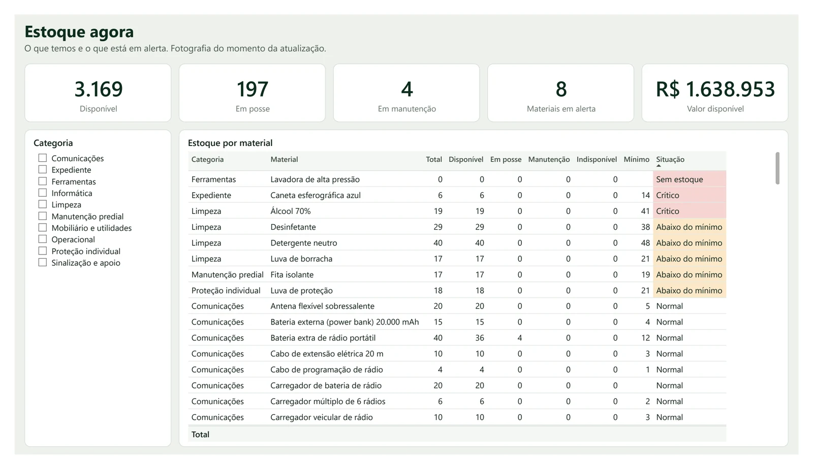

Relatórios no Power BI
O sistema é para operar o balcão; a análise fica no Power BI. São dois relatórios, cada um lendo o banco que responde à sua pergunta. Dados fictícios.

Página 1 de 6
Estoque agora
Como os relatórios foram feitos
Modelo estrela no banco
O PostgreSQL entrega as dimensões e os fatos prontos no schema bi. O Power BI só importa e relaciona.
Usuário que só lê
A conexão usa almox_bi, que enxerga só os schemas de análise e não consegue gravar nada. Isso é testado.
Relatório como código
Formato de projeto (PBIP): modelo em TMDL e páginas em JSON, versionados no Git. Cada número foi conferido com SQL.